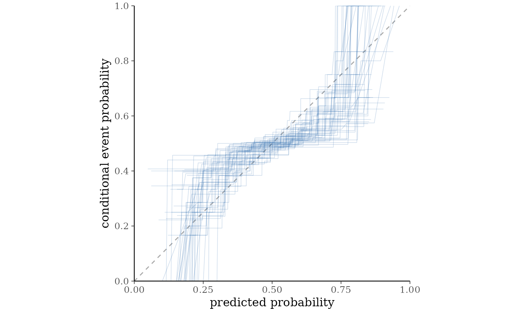
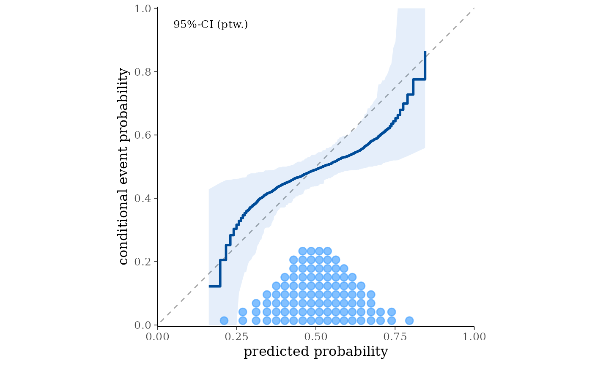
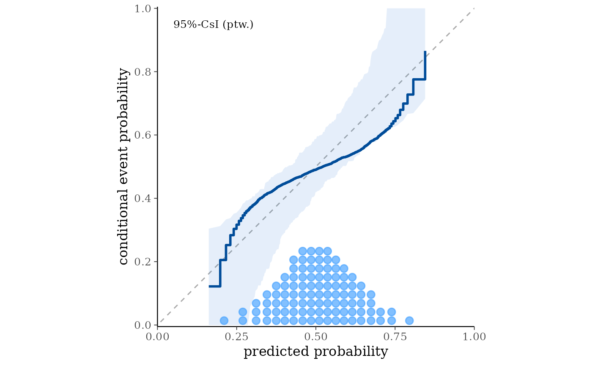

Assess the calibration of the predictions, or predictive probabilites in relation to binary observations. See the Plot Descriptions section, below, for details.
Usage
ppc_calibration_overlay(y, prep, ..., linewidth = 0.25, alpha = 0.2)
ppc_calibration_overlay_grouped(
y,
prep,
group,
...,
linewidth = 0.25,
alpha = 0.2
)
ppc_calibration(
y,
prep = NULL,
yrep = NULL,
prob = 0.95,
interval = c("confidence", "consistency"),
help_text = TRUE,
B = 200,
show_mean = TRUE,
show_qdots = TRUE,
qdots_quantiles = 100,
...,
linewidth = 1,
alpha = 0.1
)
ppc_calibration_grouped(
y,
yrep = NULL,
prep = NULL,
group,
prob = 0.95,
interval = c("confidence", "consistency"),
help_text = TRUE,
B = 200,
show_mean = TRUE,
show_qdots = TRUE,
qdots_quantiles = 100,
...,
linewidth = 1,
alpha = 0.1
)
ppc_loo_calibration(
y,
yrep,
lw = NULL,
psis_object = NULL,
prob = 0.95,
interval = c("confidence", "consistency"),
help_text = TRUE,
B = 200,
show_mean = TRUE,
show_qdots = TRUE,
qdots_quantiles = 100,
...,
linewidth = 1,
alpha = 0.1
)
ppc_loo_calibration_grouped(
y,
yrep,
lw = NULL,
psis_object = NULL,
group,
prob = 0.95,
interval = c("confidence", "consistency"),
help_text = TRUE,
B = 200,
show_mean = TRUE,
show_qdots = TRUE,
qdots_quantiles = 100,
...,
linewidth = 1,
alpha = 0.1
)
ppc_calibration_data(
y,
prep = NULL,
yrep = NULL,
group = NULL,
type = c("overlay", "interval"),
prob = 0.95,
interval = c("confidence", "consistency"),
B = 200
)Arguments
- y
A vector of observations. See Details.
- prep
For
ppc_calibration(),ppc_calibration_grouped(),ppc_calibration_overlay(), andppc_calibration_overlay_grouped(), anSbyNmatrix of predicted probabilities in[0, 1], whereSis the number of draws andNthe number of observations (N = length(y)).- ...
Currently unused.
- linewidth, alpha
Arguments passed to geoms controlling line width and opacity.
- group
A grouping variable of the same length as
y. Will be coerced to factor if not already a factor. Each value ingroupis interpreted as the group level pertaining to the corresponding observation.- yrep
An
SbyNmatrix of draws from the posterior (or prior) predictive distribution, or aposterior::drawsobject. The number of rows,S, is the size of the posterior (or prior) sample used to generateyrep. The number of columns,Nis the number of predicted observations (length(y)). The columns ofyrepshould be in the same order as the data points inyfor the plots to make sense. See the Details and Plot Descriptions sections for additional advice specific to particular plots.- prob
For
ppc_calibration(),ppc_calibration_grouped(),ppc_loo_calibration(), andppc_loo_calibration_grouped(). Probability used to compute the uncertainty intervals. Defaults to0.95.- interval
For
ppc_calibration(),ppc_calibration_grouped(),ppc_loo_calibration(), andppc_loo_calibration_grouped(), pointwise uncertainty interval around the calibration curve. Choose"confidence"(default) to answer the question: "Where does the calibration curve of the model lie?" or"consistency"to answer the question: "If the model is correctly specified, where would we expect the calibration curve to fall?".- help_text
For
ppc_calibration(),ppc_calibration_grouped(),ppc_loo_calibration(), andppc_loo_calibration_grouped(), ifTRUE(default) display a label in the plot indicating the interval type asCI(confidence) orCsI(consistency) with the selectedprob.- B
For
ppc_calibration(),ppc_calibration_grouped(),ppc_loo_calibration(), andppc_loo_calibration_grouped()that useyrepwithinterval = "confidence", the number of bootstrap samples. Default is200. Ignored ifprepis used orinterval = "consistency".- show_mean
For
ppc_calibration(),ppc_calibration_grouped(),ppc_loo_calibration(), andppc_loo_calibration_grouped(), ifTRUE(default), draw the estimated calibration curve.- show_qdots
For
ppc_calibration(),ppc_calibration_grouped(),ppc_loo_calibration(), andppc_loo_calibration_grouped(), ifTRUE(default) add a quantile dot plot at the bottom of the panel to show the marginal distribution of predicted probabilities.- qdots_quantiles
For
ppc_calibration(),ppc_calibration_grouped(),ppc_loo_calibration(), andppc_loo_calibration_grouped(), positive integer indicating the number of dots in the quantile dot plot. Default is100.- lw
For
ppc_loo_calibration()andppc_loo_calibration_grouped(), a matrix of log weights with the same dimensions asyrep. Eitherpsis_objectorlwhas to be specified.- psis_object
For
ppc_loo_calibration()andppc_loo_calibration_grouped(), an object of class"psis"that is created when theloo()function callspsis()internally to do the PSIS procedure. Eitherpsis_objectorlwhas to be specified.- type
For
ppc_calibration_data(), the data structure to compute:"overlay"forppc_calibration_overlay()or"interval"forppc_calibration()and their corresponding _grouped and _loo variants.
Value
The plotting functions return a ggplot object that can be further
customized using the ggplot2 package. The functions with suffix
_data() return the data that would have been drawn by the plotting
function.
Details
The ppc_calibration functions are designed to assess the calibration of a model with binary outcomes. In this context, calibration refers to the agreement between predicted probabilities and conditional event probabilities (CEPs) see Dimitriadis et al. (2021) and Säilynoja et al. (2025) for details.
The required inputs are y, representing binary observations
(0 or 1), and either yrep or prep. Specifically,
ppc_calibration_overlay() and ppc_calibration_overlay_grouped() require
prep, while ppc_calibration(), ppc_calibration_grouped(),
ppc_loo_calibration(), and ppc_loo_calibration_grouped() accept either
prep or yrep.
A document with detailed explanations and examples is available in the vignettes.
Plot Descriptions
ppc_calibration(),ppc_calibration_grouped()PAV-adjusted calibration plots showing the relationship between the predicted event probabilities and the conditional event probabilities. The
intervalparameter controls whether confidence intervals, or consistency intervals are computed around the calibration curve.ppc_calibration_overlay(),ppc_calibration_overlay_grouped()Overlay plots showing posterior samples of PAV-adjusted calibration curves for each posterior draw, which can be used to visually assess the uncertainty in the calibration curve.
ppc_loo_calibration(),ppc_loo_calibration_grouped()PAV-adjusted calibration plots to assess the calibration of the leave-one-out (LOO) predictive probabilities, computed by resampling each observation's posterior predictive draws using LOO importance weights.
ppc_calibration_data()Data frame containing the data underlying the calibration plots, which can be used to build custom calibration plots. The
typeargument controls whether the data frame forppc_calibration_overlay()and its_grouped`` variant is computed (type = "overlay"), or the data frame forppc_calibration()and its_groupedor_loovariant is computed (type = "interval"`).
References
Dimitriadis, T., Gneiting, T., & Jordan, A. I. (2021). Stable reliability diagrams for probabilistic classifiers. Proceedings of the National Academy of Sciences, 118(8). https://doi.org/10.1073/pnas.2016191118
Säilynoja, T., Johnson, A. R., Martin, O. A., & Vehtari, A. (2025). Recommendations for visual predictive checks in Bayesian workflow. (Preprint). arXiv. https://doi.org/10.48550/arXiv.2503.01509
Examples
color_scheme_set("brightblue")
# Make an example dataset of binary observations
ymin <- range(example_y_data(), example_yrep_draws())[1]
ymax <- range(example_y_data(), example_yrep_draws())[2]
y <- rbinom(length(example_y_data()), 1, (example_y_data() - ymin) / (ymax - ymin))
prep <- (example_yrep_draws() - ymin) / (ymax - ymin)
ppc_calibration_overlay(y, prep[1:50, ])

# Compare confidence vs consistency intervals
ppc_calibration(y, prep, interval = "confidence")

ppc_calibration(y, prep, interval = "consistency")
